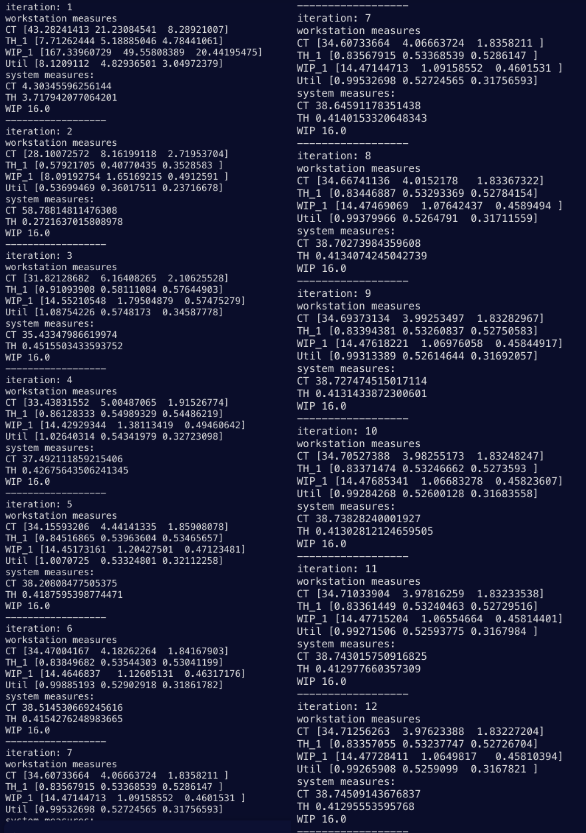

Introduction
This project showcases the ability to gain valuable insights on manufacturing processes given little information. The system is multi-product and has 3 workstations which products are developed. CONWIP refers to the fact that the system will always have the same number of products in the system (CONstant Work-In-Progress)
The figure below shows the pathing the 2 products must take.
Using an approximation algorithm for marie's mean value algorithm, do 12 iterations on the two product problem with CONSTANT WIP Limits of (6, 10). The networks above are the routings for the two products. The mean service time (in hours) for these two products are:
| WS1 | WS2 | WS3 | |
|---|---|---|---|
| Prod 1 | 0.5 | 0.75 | 0.8 |
| Prod 2 | 1.6 | 1.2 | 0.5 |
Introduction
The purpose of this exercise/project is to demonstrate how one is able to calculate workstation and factory performance measures using limited information. In this case, the only values we are working with are the service times for each product on each workstation and the route each product takes.
The approximation for marie's mean value algorithm is extremely useful for situations where there are multiple products which have to take different paths. Using just Marie's Mean Value algorithm would result in too many calculations.
Source: Curry, G. L., & Feldman, R. M. (2011). Manufacturing Systems Modeling and analysis. Springer-Verlag Berlin Heidelberg.
Process
Taking the information from the workstation flow diagrams, we can create a p-matrix for both products. Then using this, a vector for relative flow rates can be found using Property 8.1 (Curry). Below is the diagram and formula for relative flow:
Now all of the hand calculation is done and a code was written to calculate each iteration of the approximation algorithm. An explanation for the steps needed to complete the technique can be found in Chapter 8 of Curry's textbook. This technique converges on a value if enough iterations are performed and provides great accuracy.
Source: Curry, G. L., & Feldman, R. M. (2011). Manufacturing Systems Modeling and analysis. Springer-Verlag Berlin Heidelberg.
Results
After running the python script, the workstation measures and total system measures are calculated. The cycle time is the amount of time a product takes to pass throuh the workstation/system. The throughput is the rate at which the products are pulled through the system. WIP is constant (hence the name CONWIP) for the system however the WIP at each workstation can still be calculated. The utilization is the proportion of time a workstation spends busy.
